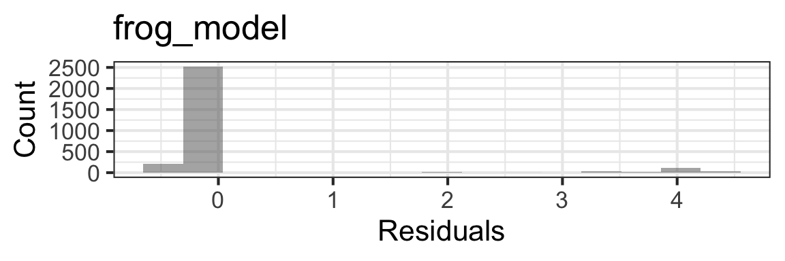

29 Regression for Binary Responses (one trial per row)
29.1 Module Learning Outcomes
Another module, another response variable type! This module, we’ll consider how to model a response that is a binary categorical variable. We will start with the mathematics of the model equation and then see how to adjust our model planning, fitting, assessment, and interpretation to this new case. Initially, we will consider the simplest and maybe most common set-up for binary data: one-trial-per-row data.
By the end of the module you will:
- Understand how the regression equation must be modified to accommodate a binary response variable
- Distinguish between logit, probit, and complementary log-log link functions and justify the choice of one or the other for a model
- State how the n/15 rule is modified in the case of binary data (n is replaced by the number of successes or failures, whichever is smaller)
- Do model planning, fitting, assessment, and interpretation one-trial-per-row binary-response datasets
- Complete the whole modelling process (plan/explore, fit, assess, and select/interpret) for binary data
29.2 Text Reference
Recommended reading for the materials covered in this tutorial can be found in:
- Beyond Multiple Linear Regression Chapter 6
- Course Notes Chapter 9
- Regression Modeling Strategies Chapters 10-11
It’s suggested that you consider consulting these chapters after doing this tutorial, with particular focus on any topics you found most challenging.
29.3 Data Source
The dataset used here is on Alaskan wood frogs, detailing some physical characteristics, habitat characteristics, and the number of developmental and other abnormalities found in the frogs. It was originally obtained from:[http://datadryad.org/resource/doi:10.5061/dryad.sq72d].
What the researchers were really interested in studying was whether the frogs’ abnormalities were associated with several sources of stress in their habitat, including predators hunting the frogs and tadpoles as well as the amount of toxins contaminating their habitat. So, they also measured the abundance of frogs’ predators and levels of various contaminants in the water at the study sites where the frogs were captured.
The data file can be accessed online at: [http://sldr.netlify.com/data/frog-abnormalities.csv]
And so can be read into R as shown below:
Rows: 9,011
Columns: 17
$ collection_id <chr> "KNA1021-RASY-080712", "KNA1024-RASY-080…
$ frog_id <chr> "15", "13", "24", "5", "26", "47", "18",…
$ gosner_stage <chr> "stage 45", "stage 44", "stage 45", "sta…
$ tail_length <dbl> 2, 20, 1, 3, 17, 33, 16, 1, 2, 0, 40, 32…
$ frog_comments <chr> NA, NA, NA, NA, NA, "~ 3mm of right thig…
$ abnormal <chr> "No", "No", "No", "No", "No", "Yes", "Ye…
$ bleeding_injury <chr> "No", "No", "No", "No", "No", "No", "No"…
$ skeletal_abnormality <chr> "No", "No", "No", "No", "No", "Yes", "Ye…
$ eye_abnormality <chr> "No", "No", "No", "No", "No", "No", "No"…
$ surface_abnormality <chr> "No", "No", "No", "No", "No", "No", "No"…
$ site <chr> "KNA1021", "KNA1024", "DNR1069", "KEN109…
$ date <chr> "8/7/12", "8/8/12", "8/6/12", "8/6/12", …
$ year <chr> "12", "12", "12", "12", "12", "12", "12"…
$ coll_date <chr> "6/8/12", "6/7/12", "6/3/12", "6/4/12", …
$ other_invert_relative_density <dbl> 607, 503, 788, 352, 171, 503, 2917, 503,…
$ dragonfly_relative_density <dbl> 6, 8, 3, 1, 6, 8, 100, 8, 66, 12, 35, 10…
$ detectable_analytes <dbl> 24.00000, 29.33333, 15.33333, 17.33333, …Variables in the dataset include:
- Some sample identifiers:
collection_id,frog_id,site - Some information about time of data collection:
date,year,coll_date - Data on the size and developmental stage of the frog:
gosner_stage,tail_length(which is longer for young frogs, that is, tadpoles) - Whether or not the frog has any abnormality in general (
abnormal), an injury (bleeding_injury), or a specific type of abnormality:skeletal_abnormality,eye_abnormality,surface_abnormality - Relative abundance of invertebrate predators of frogs:
dragonfly_relative_densityandother_invert_relative_density - A rough summary of water chemical testing results:
detectable_analytes, which measures the average number of chemical contaminants (out of a set list that was tested for at every site) detectable in the sample
29.4 Dataset Size: n/15 revised
For linear regression and count regression, we used a rule-of-thumb that said our dataset should have about 15 rows for every model parameter we wanted to try to estimate. We called this the \(\frac{n}{15}\) rule – take the number of rows in your dataset (\(n\)), divide by 15, and that’s about how many parameters you can expect to reliably estimate when fitting a regression model to that dataset.
For binary data, it’s a bit different. Imagine you had 10,000 rows of data and your response variable was the number of people who had eyes of two different colors. If you data matched the US population, you might expect to have about 67 “successes” – people with 2 different colored eyes. At first 10,000 seems like a huge sample, but counting the successes makes you realize you might not actually be able to estimate even the proportion with this trait – much less how it depends on lots of predictors – with your \(n = 10000\) dataset.
We have a different sample-size rule of thumb for binary data: call it \(\frac{m}{15}\)…
First, count the number of successes and the number of failures in your dataset (for the example above, it would be 67 and 9933). Take the smaller of the two numbers; call that \(m\). Divide by 15 to get a rough estimate of the number of parameter you’d be able to estimate well in a regression model fit to that data.
29.5 Causal Diagram?
You’re encouraged to pause here and read the paper’s abstract (below) – think about what causal diagram you’d draw and what model you’d plan to fit, if you were to try to replicate these results?
The repeated occurrence of abnormal amphibians in nature points to ecological imbalance, yet identifying causes of these abnormalities has proved complex. Multiple studies have linked amphibian abnormalities to chemically contaminated areas, but inference about causal mechanisms is lacking. Here we use a high incidence of abnormalities in Alaskan wood frogs to strengthen inference about the mechanism for these abnormalities. We suggest that limb abnormalities are caused by a combination of multiple stressors. Specifically, toxicants lead to increased predation, resulting in more injuries to developing limbs and subsequent developmental malformations. We evaluated a variety of putative causes of frog abnormalities at 21 wetlands on the Kenai National Wildlife Refuge, south-central Alaska, USA, between 2004 and 2006. Variables investigated were organic and inorganic contaminants, parasite infection, abundance of predatory invertebrates, UVB, and temperature. Logistic regression and model comparison using the Akaike information criterion (AIC) identified dragonflies and both organic and inorganic contaminants as predictors of the frequency of skeletal abnormalities. We suggest that both predators and contaminants alter ecosystem dynamics to increase the frequency of amphibian abnormalities in contaminated habitat. Future experiments should test the causal mechanisms by which toxicants and predators may interact to cause amphibian limb abnormalities. - Reeves et al. 2010, https://doi.org/10.1890/09-0879.1
29.6 Causal Diagram
One causal diagram consistent with the abstract, using variables from our dataset, might be based particularly on the statement that “toxicants lead to increased predation, resulting in more injuries to developing limbs and subsequent developmental malformations”…
Think: what model formula might we use to figure out whether chemical contamination is associated with higher rates of skeletal_abnormalities?
Model Formula
We might consider…
Think about:
- Why did I not include injuries? (Deformities of the skeleton persist, but the injuries that might mediate them will be much more short-lived and thus super rare to detect)
- Would you have included site? (We’ll think about whether and how to include such predictors later in the course in a lot more detail.)
- Why isn’t the frog’s developmental stage in there? Younger frogs may be more likely to be attacked, and there may be other interactions there too. Not having thought this through more is probably a mistake! Can you do it, and propose a better model? Possible extra credit if you want to give it a try.
But assuming we go with the formula above… if we wanted to fit that model, we don’t know how yet.
The big problem is that our response, skeletal_abnormality, is a binary variable – categorical with two categories. Neither linear regression nor a count model will work at all. (You could try assigning value 0 for no abnormality and 1 for abnormality, but you will run into all sorts of assessment issues basically every time, not to mention that you’ll very frequently predict values below 0, above 1, and in between 0 and 1. We can do much better!)
29.7 Model Equation
How will our regression model equation work for binary response variables? First, let’s recap the other response variable types we’ve seen so far.
Linear Regression
Recall, for linear regression we fitted a model for continuous (numeric) response variable \(y\) according to:
\[y = \beta_0 + \beta_1 x_1 + \beta_2 x_2 + \beta_3 x_3 + ...\beta_k x_k + \epsilon \]
where \(x\)s are the \(k\) predictor variables, \(\beta\)s are the parameters to be estimated by the model, and \(\epsilon \sim N(0,\sigma)\) are the model residuals.
Count Regression
When our response variable was a count variable, we modified our equation to:
\[log(\lambda_i) = \beta_0 + \beta_1 x_{1i} + \beta_2 x_{2i} + \beta_3 x_{3i} + ...\beta_k x_{ki}\]
positing that \(y_i \sim Pois(\lambda_i)\) for Poisson regression; similarly for quasi-Poisson or negative binomial regression, we just replaced that Poisson distribution with a negative binomial distribution, \(y_i \sim NBinom(\mu_i, \sigma_i)\).
And of course, there are still residuals, defined as \(e_i = y_i - \hat{y}_i\)…
Binary Regression
What if our response variable is logical, also known as binary, like it is now – a categorical variable with just two possible values? We will designate one of the two values a “success,” and then we want to predict the probability of success as a function of some set of predictors. What will our model equation look like in this case?
First, we’ll need to think about what probability distribution might come into play to model a binary variable. The obvious choice is the binomial distribution, which models the observed number of “successes” as a function of the number of “trials” and the probability of success, \(p\), in each trial. Specifically, it says that the probability of observing \(k\) successes in \(n\) trials will be given by:
\[P(X = k) = p^k(1-p)^{(n-k)}\]
We can use this, in much the same way we used the Poisson distribution and the negative binomial with count data! Again we need to adjust our model equation…
We CANNOT write
\[\text{skeletal_abnormality} = \beta_0 + \beta_1\text{dragonfly_relative_density} + ... \]
the left-hand-side there, skeletal_abnormality, is a categorical variable so there’s just NO way it can “equal” a real number.
But hey, check out the parameters of the binomial distribution – specifically, \(p\). That’s the probability of “success”, or in our example, it could be the probability of having a skeletal abnormality. We could say
\[\text{skeletal_abnormality}_i \sim Binom(n=1, p_i)\]
In other words, our categorical, binary response follows a binomial distribution with some probability of success \(p_i\) for each case \(i\), and those \(p_i\) will depend on our predictors. That actually makes sense!
But…we STILL can’t write
\[p_i = \beta_0 + \beta_1 x_1 + \beta_2 x_2 + \beta_3 x_3 + ...\beta_k x_k\]
Because \(p_i\) is bounded between 0 and 1 and the right hand side of the equation is…not, at all.
We need a link function that takes values between 0 and 1 as input, and maps them to values along the real numberline. One such superhero function is the logit function, defined as \(logit(p) = log(\frac{p}{(1-p)})\). This function maps probabilities to positive and negative real numbers, effectively “spreading them out” from the range 0-1 to the full range of real numbers.
So our binary regression equation is…
\[ logit(p_i) = \beta_0 + \beta_1 x_1 + \beta_2 x_2 + \beta_3 x_3 + ...\beta_k x_k\]
How does this equation relate back to our desired response variable again?
Well, the \(i\)th observation of the response variable is assumed to follow a binomial distribution with probability \(p_i\) of “success” (\(y_i \sim Binom(n_i, p_i)\)).
\(n_i\) depends on the setup of the data and doesn’t need estimating – often n = 1 for every row of the dataset, as here where the response is a two-valued categorical variable and each row is one frog. We can think of each frog as the subject of one binomial trial, with success/failure meaning abnormality/lack of abnormality of the frog.
(And there are still residuals, which are the difference between the observed and expected response, \(e_i = I_{success} = p_i\), where \(I_{success}\) is 0 if the \(i\)th data point is a “failure” and 1 if “success.”)
29.8 Data setup
We would like to model the proportion frogs with abnormalities as a function of a set of covariates. The variable skeletal_abnormality has values “Yes” and “No”. In R, if we use this variable as our response, how will R determine which level (value of the variable) is a “success”?
R uses the FIRST variable value as “failure” and the second as “success” – this kind of makes sense if you imagine coding 0 for failure and 1 for success (and then sorting in numeric/alphabetical order).
If you have a categorical variable with informative value labels…
you will need to make sure that the “base” (first) level is the one you want to equate with “failure”.
So, just to check, what values does our response variable have and which one is first and which second?
NULLEEK! “NULL”? That can’t be right!
When you read in data on categorical variables with read_csv(), it reads them in as “character” type variables.
R has another type of variable that can be used for categorical data, too: “factor” type.
We need a factor to be able to use the levels() function. But more importantly: our model fitting functions for this section will only work with factor type response variables (or logical ones…but we’ll prefer factors.)
Side note: you can get the unique values of a non-factor variable with function unique() instead…but not here.
So, we need to force our variable to be a factor, then pull out the levels()…
[1] "No" "Yes"If you do need to rearrange the levels, one way to do it is to use the forcats::fct_relevel() function. Example:
[1] "No" "Yes"29.9 Fit Model
Let’s try fitting a model for skeletal_abnormality as we planned earlier.
frog_model <- glmmTMB(skeletal_abnormality ~
detectable_analytes +
dragonfly_relative_density +
other_invert_relative_density,
data = frogs,
family = binomial(link = 'logit'))
summary(frog_model) Family: binomial ( logit )
Formula:
skeletal_abnormality ~ detectable_analytes + dragonfly_relative_density +
other_invert_relative_density
Data: frogs
AIC BIC logLik -2*log(L) df.resid
1382.8 1406.8 -687.4 1374.8 2918
Conditional model:
Estimate Std. Error z value Pr(>|z|)
(Intercept) -2.802e+00 1.599e-01 -17.515 < 2e-16 ***
detectable_analytes -3.270e-03 6.075e-03 -0.538 0.59034
dragonfly_relative_density 5.209e-03 1.949e-03 2.672 0.00753 **
other_invert_relative_density -3.357e-05 1.073e-04 -0.313 0.75425
---
Signif. codes: 0 '***' 0.001 '**' 0.01 '*' 0.05 '.' 0.1 ' ' 129.10 Link Functions
Here, notice we have used the logit link function, which is the most common. However, there are other functions that translate proportions to real numbers, and are sometimes used in regression for binary data. Two common options are:
- Probit regression: link=‘probit’
- Complementary log-log regression: link=‘cloglog’
There are not closed-form expressions for the the probit and complementary log-log functions that are easy to write down, so that is why the exact functions are not given here. As shown below, the shapes of these three functions are very similar. So it may come as no big surprise that frequently they provide similar goodness of fit to data (according to IC). If that is the case, choose logit (which makes some of the interpretation of results easier).

Note: figure is from [http://data.princeton.edu/wws509/notes].
29.11 Assessment: Conditions
Under what conditions is a logistic regression model appropriate?
- Response variable is logical – you can characterize it as the outcome of a binomial trial (or a set of independent binomial trials).
- Some response variables can be expressed as proportions, but can not be well modelled with binomial regression. For example, you might take one-minute recordings in the woods and measure the proportion of each minute during which bird song was audible. The data will look like proportions, but you can’t think of them as binomial trials and should not model them with binomial regression (what is a “trial” here, and what is a “success”? Make sure you can answer those questions before using binomial regression!)
- Linearity: logit(p) should have a linear relationship with each predictor variable. (A bit hard to check predictor-by-predictor - you’d need to group observations some smart way, compute probabilities of succes in each group, and plot the
logit()of that as a function of each predictor. We will generally rely on the scaled residual plot to detect issues with this condition, instead.) - Independence of residuals: Same as usual.
- Mean-variance relationship: The Pearson or Deviance residuals will decrease as a function of fitted value, and should have approximately constant variance as a function of fitted value. But a basic residuals vs. fitted plot is of almost no use to us (almost always looks odd to the untrained eye in the same way; very hard to interpret). So we will use our scaled residual plot again for sure! Its derivation and interpretation is the same as it was in count regression!
- NO distributional assumptions about residuals to check.
29.12 Assessment: Plots
Check Residual Independence
Uh-oh! This looks very, very bad. The ACF values are FAR outside the confidence bounds at all lags, so the residuals are definitely not independent. We are, luckily, just using this model for practice and not inference!
# DO NOT USE THIS IN YOUR OWN ASSESSMENT OF YOUR MODELS!
gf_point(resid(frog_model, type='pearson') ~ fitted(frog_model)) |>
gf_labs(title='frog_model',
y=' Pearson\nResiduals',x='Fitted Values')Oh, no! That is not easy to make sense of. The two “lines” in the residuals vs fitted plots correspond with the two possible values of the response variable in the data. But other than that…ummmm…
Remember, scaled residual plots to the rescue!
# ACUTALLY USE THIS WAY FOR MEAN-VARIANCE CONDITION
library(DHARMa)This is DHARMa 0.4.7. For overview type '?DHARMa'. For recent changes, type news(package = 'DHARMa')sim_frog_res <- simulateResiduals(frog_model)
plotResiduals(sim_frog_res, quantreg = FALSE)Ahhh…there are no trends evident, so no clear indication of a problem the the (logit) linearity condition.
The mean-variance relationship also seems to be well-modeled, because the scaled residuals are uniformly distributed (vertically) between 0-1.
Histogram?
Do we need a histogram of residuals? NO! We don’t need this!
This model doesn’t make any assumptions about the distribution of the residuals. If you insist on making a histogram anyway (say, you forget you don’t need it) it will look really odd:
gf_histogram(~resid(frog_model, type = 'pearson'),
bins=15) |>
gf_labs(title = 'frog_model',
x = 'Residuals', y = 'Count')
Just remember - there is not a strict distributional assumption about the residuals (in other words, they don’t have to follow, say, a normal distribution), so we don’t really have to make a histogram of them. The one here is shown just to help you remember that you don’t have to check it, and if you do, it will look “strange” (bimodal like this) yet it is nothing to worry about and there’s no need either to check it, or to worry about it.
29.13 Odds Ratios
The odds (or odds ratio) is \(\frac{p}{1-p}\) – the ratio of success to failure. So if P(success) = 0.75, then the odds will be \(\frac{0.75}{0.25}\) = 3 or “three to one” – you will usually succeed three times for every failure.
Remember, the logit function was \(logit(x) = log(\frac{p}{1-p})\)?
In other words, the logit is the log of the odds ratio.
This means that the coefficients (the \(\beta\)s!) of a binary regression model with logit link function have special interpretations in terms of odds ratios.
Remember our model:
Family: binomial ( logit )
Formula:
skeletal_abnormality ~ detectable_analytes + dragonfly_relative_density +
other_invert_relative_density
Data: frogs
AIC BIC logLik -2*log(L) df.resid
1382.8 1406.8 -687.4 1374.8 2918
Conditional model:
Estimate Std. Error z value Pr(>|z|)
(Intercept) -2.802e+00 1.599e-01 -17.515 < 2e-16 ***
detectable_analytes -3.270e-03 6.075e-03 -0.538 0.59034
dragonfly_relative_density 5.209e-03 1.949e-03 2.672 0.00753 **
other_invert_relative_density -3.357e-05 1.073e-04 -0.313 0.75425
---
Signif. codes: 0 '***' 0.001 '**' 0.01 '*' 0.05 '.' 0.1 ' ' 1So our model equation is…write the equation, y’all! See you on the next page after you do it…
Model equation
\[ logit(p_i) = -2.8 - 0.0033\text{detectable_analytes} + 0.0052\text{dragonfly_relative_density}\] \[- 0.000034\text{other_invert_relative_density}\] Where \(p_i\) is the probability of a frog’s having a skeletal abnormality. This probability is different depending on the conditions (contamination level, predation pressure, etc.).
According to this model, the log-odds (logit(p)) for a frog with zero detected analytes and zero invertebrate predators (dragonflies or others) present would be on average -2.8, so the odds of having a skeletal_abnormality for such a frog are \(e^{-2.8} = 0.061\).
That would be a kind of lucky frog, though! The median frog can expect to have a relative dragonfly density of about 20. If it still had zero other-invert predators, and no detected analytes, its expected logit(p) would be…I mean…you compute what it would be using the equation!
logit_p <- -2.8 - 0.0033 * detectable_analytes + 0.0052 * dragonfly_relative_density -
0.000034 * other_invert_relative_density Above, the model parameter estimates are filled in – now, what are the predictor variable values? Fill in those too…
logit_p <- -2.8 - 0 + 0.0052 * 20 -
0.000034 * 0
logit_pThe log-odds for the median-dragonflies, no-contaminants, no-other-invert-predator frog are -2.7, so the odds of it having a skeletal_abnormality are \(e^{-2.7} = 0.067\) – a bit higher than the other lucky frog.
Notice – there’s another way of thinking about this, too.
Let \(\beta_{dragon}\) be the estimated parameter value for the dragonfly relative density slope, \(\beta_{dragon} = 0.0052\). If the relative_dragonfly_density increases by 1, then the \(logit(p) = log(\frac{p}{(1-p)})\) will increase by 0.0052.
Think about exponentiating both sides of the model equation – then instead of the log of the odds, we have the odds on the left hand side; and on the right?
Model equation on odds scale
\[ \frac{p}{(1-p)} = e^{-2.8 - 0.0033\text{detectable_analytes} + 0.0052\text{dragonfly_relative_density}- 0.000034\text{other_invert_relative_density}}\] By the laws of logarithms, \(e^{a+b} = e^ae^b\) so we can rewrite that as:
\[\frac{p}{(1-p)} = e^{-2.8}e^{- 0.0033\text{detectable_analytes}}e^{0.0052\text{dragonfly_relative_density}} e^{- 0.000034\text{other_invert_relative_density}}\]
and again by the laws of logarithms, \(e^{ab} = (e^a)^b\) so it’s
\[\frac{p}{(1-p)} = e^{-2.8}(e^{- 0.0033})^{\text{detectable_analytes}} (e^{0.0052})^{\text{dragonfly_relative_density}} (e^{- 0.000034})^{\text{other_invert_relative_density}}\]
So, \(e^{\beta_{dragon}} = 0.0052\) is the multiplier on the odds ratio – every time the relative dragonfly density goes up by 1 unit, the odds of abnormality are multiplied by \(e^{\beta_{dragon}} = e^{0.0052} = 1.005214\).
And in general, \(e^{\beta}\) is the multiplier on the odds ratio for a one-unit change in the predictor variable for which \(\beta\) is the model coefficient.
(Some folks are really into reporting model results from logistic regression - that is, regression for a binary outcome with a logit link – using these “odds ratio multipliers.” However, we will prefer to just look at, and present, prediction plots on the “natural” probability scale; odd and log-odds and odds ratio multipliers are hard for many to understand…)
29.14 Model Selection
We can do this just as usual. For example, if we want to use ANOVA:
Analysis of Deviance Table (Type II Wald chisquare tests)
Response: skeletal_abnormality
Chisq Df Pr(>Chisq)
detectable_analytes 0.2898 1 0.590339
dragonfly_relative_density 7.1417 1 0.007531 **
other_invert_relative_density 0.0980 1 0.754254
---
Signif. codes: 0 '***' 0.001 '**' 0.01 '*' 0.05 '.' 0.1 ' ' 1The small p-value of 0.008 gives pretty strong evidence that increased dragonfly abundance is associated with a small increase in probability of skeletal abnormalities.
29.15 Prediction Plots
Shown here are example prediction plots. As usual, we can use predict_response() to draw them.
Data were 'prettified'. Consider using
`terms="dragonfly_relative_density [all]"` to get smooth plots.This is consistent with our model selection findings – there’s an increase in abnormalities as dragonfly abundance increases. However, remember that our model REALLY failed the residual independence check during model assessment, so we’re just making these plots and doing selection for show – we can’t draw any valid conclusions based on this model!
Data were 'prettified'. Consider using `terms="detectable_analytes
[all]"` to get smooth plots.Based on this, like the ANOVA, but with the same failed-assessment caveat, we don’t see evidence of an association between our (very crude measure of) chemical contamination and frog abnormalities.
29.16 Celebrate!
We now have so many more tools for regression modeling than we began with! We can model…
- continuous responses with linear regression
- count responses with negative binomial regression
- binary responses with binary regression - probably with a logit link, but you can use “probit” or “cloglog” too if you want to
Stay tuned for another module when we will add more!